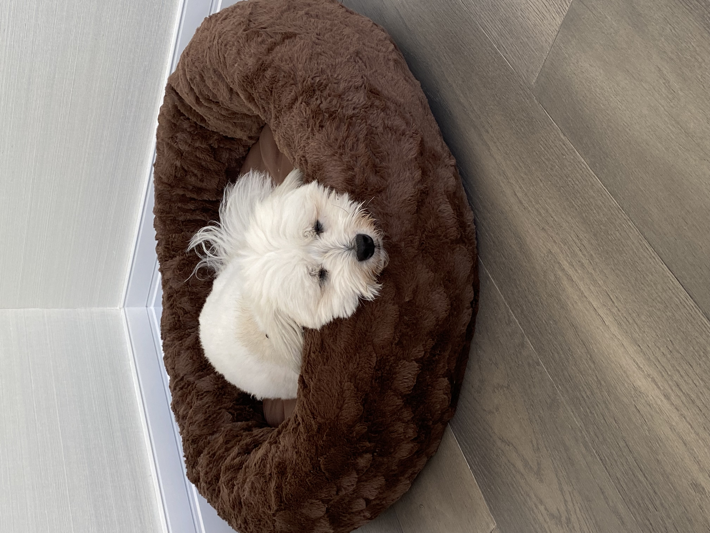

About Me
Hello! Welcome to my personal website. I am a junior at the University of Maryland - College Park in the Philip Merrill College of Journalism. I am also a Law and Society minor of the MLAW programs within the College of Behavioral and Social Sciences.
I am from Boston, Massachusetts -- and yes, I like Boston sports (TB12 still counts, right?). I am a huge dog-lover and have two small puppies of my own at my parents' home in Florida. One of my dogs is named Charlie, after Charlie Chaplin, and the other one is named Winter, after the GOT phrase "Winter is coming..."
When I am not obsessing over my dogs, anything fashion or makeup related, or new TV shows, you will most likely see me writing or reading. I am a passionate and curious journalism student who is looking to make a difference in the world and be the voice for other people who may not have one. It is my ultimate goal to use my writing skills to benefit the lives of others, encourage accountability and enforce transparency.
I am always open to connecting with someone to discuss this fascinating and ever-evolving field. While I have recently become more interested in investigative journalism, I hope that I can expand my knowledge and love of journalism by broadening the scope of a potential career choice.
I hope you enjoy scrolling through my page. Please don't hesitate to reach out with any questions -- or if you just want to chat. Thank you!
